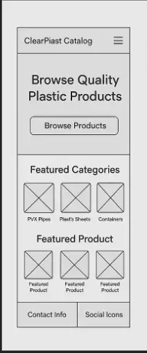
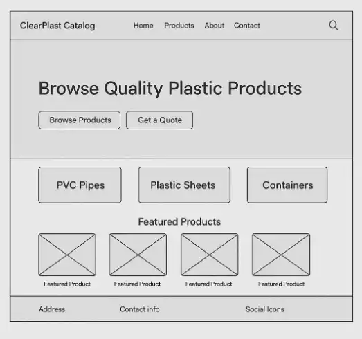

Website Planning Document
Site Name: ClearPlast Catalog
Description: ClearPlast Catalog is a clear and professional name that reflects the purpose of the site — showcasing a wide range of plastic products in an online catalogue format. “Clear” symbolizes transparency and clarity in product presentation, while “Plast” is short for plastics, making the name memorable and easy to brand.
Site Purpose
The website provides an online product catalogue for a plastic product business. It features:
- A categorized list of plastic products (e.g., PVC pipes, plastic containers, sheets, industrial plastics, etc.)
- Detailed product pages with specs and images
- A favorites system using localStorage
- A contact/quote request form
- A responsive and visually appealing layout
The goal is to support the business's growth by increasing its online visibility and improving customer interaction.
Scenarios
1. How can I find all the plastic storage containers your company offers? → Visitors can go to the Products Page, use the category filters (like “Containers”), and view relevant items.
2. Can I request a quote for several products I’m interested in? → Yes, users can add products to their favorites list and then use the Quote Request Page to send an inquiry.
| Color Schema | ||
|---|---|---|
| Color Name | Hex Code | Usage |
| Deep Blue | #1A237E | Main headers, navigation bar, buttons |
| Light Gray | #F5F5F5 | Background for product sections |
| Accent Orange | #FFA000 | Button hovers, icons, small highlights |
| White | #FFFFFF | Text areas, card backgrounds |
| Typography | |
|---|---|
| Font Name | Usage |
| Montserrat | Used for page and section headings (modern and bold) |
| Open Sans | Used for body text and paragraphs (easy to read) |
| Courier New | Used for product codes/specifications (tech-style font) |
Wireframes (Home Page)
Mobile View (Image)
Desktop View (Image)
